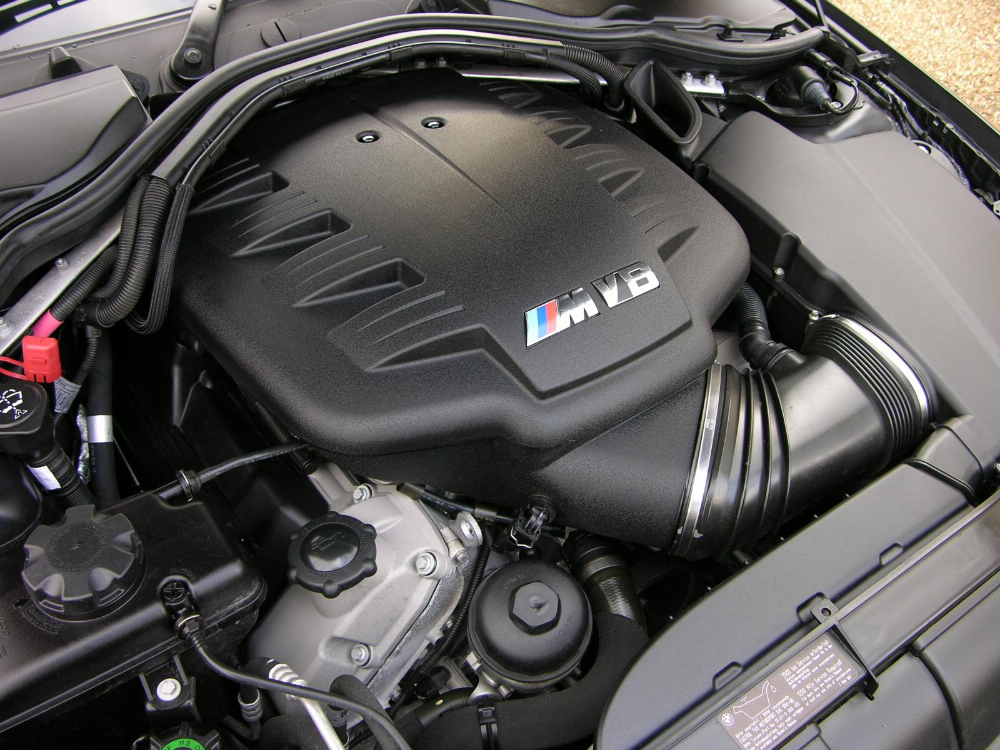

Mecânica
Motorização 4
Combustível N/D N/D
Potência (cv) 420 N/D
Torque (kgf.m) 40,8 N/D
Velocidade Máxima (km/h) 280 N/D
Tempo 0-100 (s) 4,8 N/D
Consumo cidade (km/l) N/D N/D
Consumo estrada (km/l) N/D N/D
Câmbio manual de 6 marchas
Tração traseira
Direção hidráulica
Suspensão dianteira Suspensão tipo McPherson e dianteira com barra estabilizadora, roda tipo independente e molas helicoidal.
Suspensão traseira Suspensão tipo multibraço e traseira com barra estabilizadora, roda tipo independente e molas helicoidal.
Freios Quatro freios à disco com quatro discos ventilados.
Dimensões
Altura (mm) 1.418
Largura (mm) 1.804
Comprimento (mm) 4.615
Peso (Kg) 1.655
Tanque (L) 63
Entre-eixos (mm) 2.761
Porta-Malas (L) 430
Ocupantes:4
Resumo
A BMW M3 E96, mais comumente chamada de M3 E92, foi uma versão icônica da linha BMW M3 produzida entre 2007 e 2013.
Esse modelo é notável por ser o único M3 a vir equipado com um motor V8 naturalmente aspirado, o famoso S65, um motor
de 4.0 litros que entrega cerca de 414 cavalos de potência e 400 Nm de torque. Esse V8 era uma inovação para a série M3,
que antes utilizava motores de seis cilindros em linha.
O modelo E92 foi a versão coupé, enquanto a E90 era o sedã, e a E93 a versão conversível.
Esse motor V8 possibilitava uma aceleração de 0 a 100 km/h em cerca de 4,1 segundos (com câmbio DCT de dupla embreagem)
e era famoso pela sua rotação alta, atingindo até 8.400 rpm, proporcionando uma experiência sonora e de desempenho excepcionais.
O M3 E92 também se destacou pela dirigibilidade precisa, graças a uma distribuição de peso equilibrada e a uma
suspensão adaptada para alto desempenho. Mesmo com o motor mais potente, a M3 E92 ainda era considerada relativamente leve,
pois a BMW usou fibra de carbono no teto, reduzindo o peso e o centro de gravidade. Esses elementos fizeram da M3 E92 um dos modelos
mais celebrados entre os entusiastas da BMW.